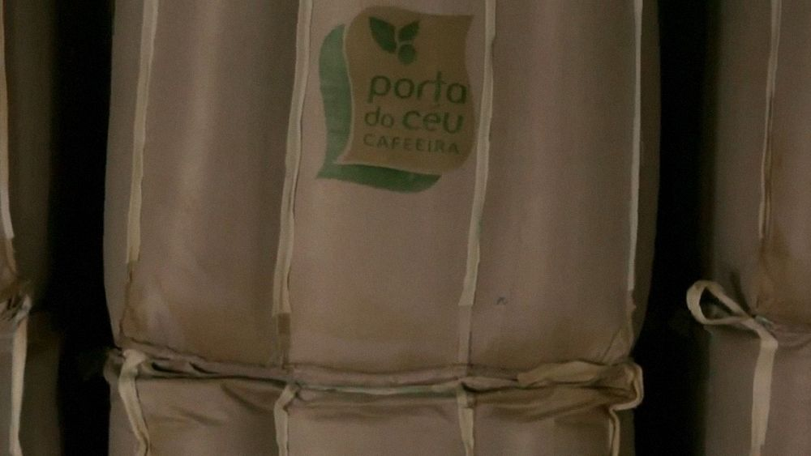

Natural
The whole cherry dries with skin and pulp. More body, intense sweetness and fruity notes.
Here every coffee is treated as specialty. Passion and dedication from seedling to storage, with every lot traceable.
Our coffees, our passion
The same fruit, four cup profiles. It all depends on what is removed from the cherry before drying.
The whole cherry dries with skin and pulp. More body, intense sweetness and fruity notes.
The skin comes off, part of the mucilage stays. A balance of sweetness and clarity. The Chapadão's signature.
Pulped with controlled mucilage, which caramelizes as it dries. Pronounced sweetness.
No skin and no mucilage. A clean, bright cup, with the terroir's acidity up front.
A sustainable production cycle, closely followed on every estate.
Selected seedlings planted in GPS-guided furrows, for precise rows and better use of the land.

Analysis-driven nutrition, integrated pest and disease management and brachiaria between the rows.

The blossom opens the cycle. Then come fruit set, bean filling and the cherry at its peak.

Harvesters tuned to respect the plant and bring in the coffee at the right ripeness.

Where the plot calls for it, coffee is picked by hand, cherry by cherry, for the most special lots.

The washer separates cherries by density before pulping or drying.

Patios and raised beds, with the coffee turned carefully throughout the day.

Drying finishes in temperature-controlled dryers, down to the exact moisture.

Identified lots rest in bins and big bags at Cafeeira Porta do Céu.

Screens, density tables and optical sorting make each lot clean and uniform.

Cup after cup, lots are combined to deliver the profile each client is looking for.

Careful roasting and a final cupping. Where a whole year of work fits in a cup.

Each lot carries its origin: estate, plot, variety, processing and drying. With the certifications, that becomes a guarantee for the buyer.
Farm, plot and variety recorded from planting onward.
From patio to warehouse, every lot stays separate and labeled.
Rainforest Alliance, Nespresso AAA and C.A.F.E. Practices on every farm.